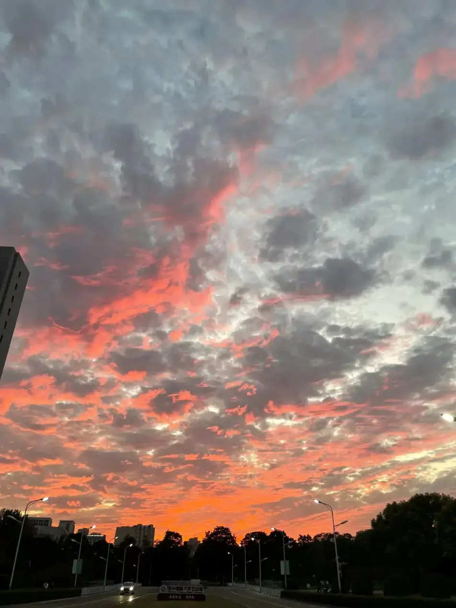

Last winter
we were together
Holding hands of each other
Last winter
Felt warm in December
Didn't feel like ever
Last winter
We were a dreamer
Dreaming of living together
Last winter
You smelled like a flower
And I loved you like a lover
Last winter
You were like a letter
And I was a reader
Last winter
You were my healer
Who healed my pain, and I wonder
Last winter
You were a lover
I was a lover
But, now we are not together
Last Winter
